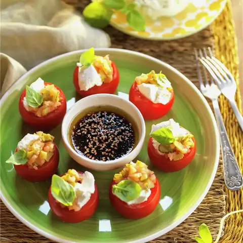

Descripción
Los tomates rellenos son una receta muy vistosa pero también muy rápida, ideal para cuando quieres cenar bien, pero sin tardar demasiado.
Tiempo de preparación: 20 minutosIngredientes (para 4 personas)
- 16 tomates maduros y pequeños
- 200 g de queso crema
- 150 g de salmón ahumado
- 100 g de encurtidos
- 50 ml de salsa de soja
- 50 g de semillas de sésamo
- Albahaca para decorar
- AOVE
Elaboración
- Lava, corta la parte superior de los tomates y extrae con una cuchara la pulpa y las semillas.
- Pica el salmón ahumado y unos 70 g de encurtidos. Pon ambos ingredientes en un cuenco y mézclalos bien.
- Mezcla la salsa de soja con el aceite y las semillas de sésamo, hasta que emulsione.
- Rellenar los tomates con la mezcla de salmón y queso.
- Bate el queso crema con el resto de los encurtidos y rellena los tomatitos con la crema resultante.
- Ahora, reparte la mezcla de salmón picado y encurtidos encima de la crema de queso de cada tomate.
- Decora con albahaca y sirve.